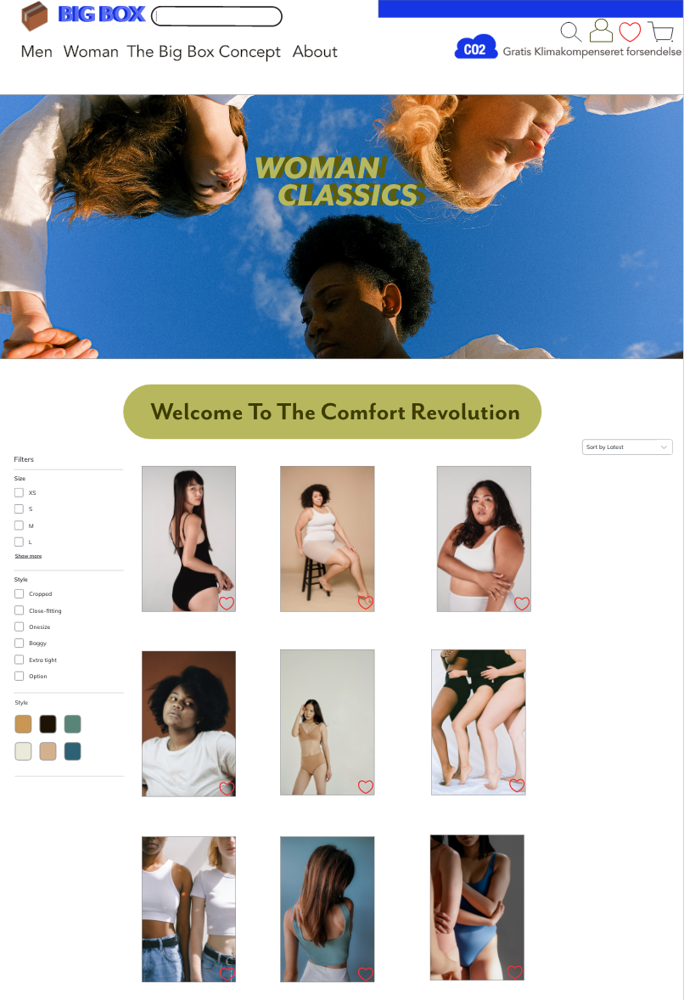

TEMA 3
Grundlæggende UX
I tema 3 lærte vi om at indsamle viden og indsigter, for at forstå brugere og brugssituationer til vores fiktive handelssite. Her udarbejde vi præsentationen af vores produkt, gennem erfaring med udvalgte UX metoder, interview, test, desktop research og spørgeskema. Derved fik man de bedste forudsætninger for at formidle researchen og testresultater for interessenter. Vi har arbejde med Adobe XD og forbindelse med design processen blev vi præsenteret for forskellige tilgange; historisk, samtiden, den nærmeste fremtid og demografi. Min hjemmeside havde en anderledes handel-og betalingsmetode der passe godt ind i “den nærmeste fremtid”. Vi lærte om web sammenhænge er konventioner af de sandarter som gennem tiden er opstået, hvilket jeg benyttede i min designprocess ift. hvor topmenuen, sørgefeltets placering, logo osv.
